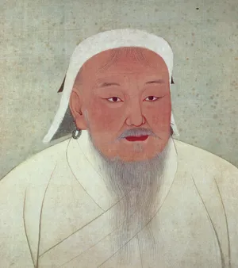
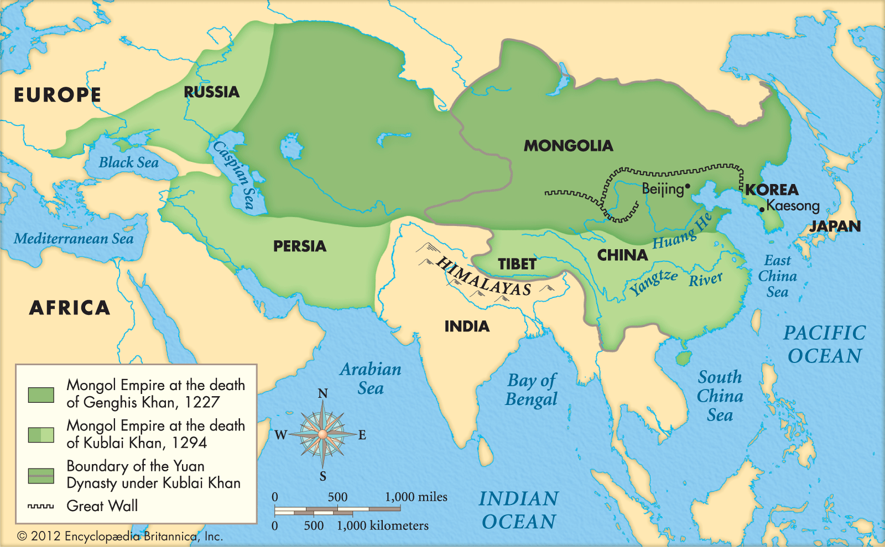

simple_quarto_website
Genghis Khan

Early Life
Various dates are given for the birth of Temüjin (or Temuchin), as Genghis Khan was named—after a leader who was defeated by his father, Yesügei, when Temüjin was born. The chronology of Temüjin’s early life is uncertain. He may have been born in 1155, in 1162 (the date favoured today in Mongolia), or in 1167. According to legend, his birth was auspicious, because he came into the world holding a clot of blood in his hand. He is also said to have been of divine origin, his first ancestor having been a gray wolf, “born with a destiny from heaven on high.” Yet his early years were anything but promising. When he was nine, Yesügei, a member of the royal Borjigin clan of the Mongols, was poisoned by a band of Tatars, another nomadic people, in continuance of an old feud 1.
Rise to power
With powerful allies and a force of his own, Temüjin routed the Merkit, with the help of a strategy by which Temüjin was regularly to scotch the seeds of future rebellion. He tried never to leave an enemy in his rear; years later, before attacking China, he would first make sure that no nomad leader survived to stab him in the back. Not long after the destruction of the Merkit, he treated the nobility of the Jürkin clan in the same way. These princes, supposedly his allies, had profited by his absence on a raid against the Tatars to plunder his property. Temüjin exterminated the clan nobility and took the common people as his own soldiery and servants. When his power had grown sufficiently for him to risk a final showdown with the formidable Tatars, he first defeated them in battle and then slaughtered all those taller than the height of a cart axle. Presumably the children could be expected to grow up ignorant of their past identity and to become loyal followers of the Mongols. When the alliance with Toghril of the Kereit at last broke down and Temüjin had to dispose of this obstacle to supreme power, he dispersed the Kereit people among the Mongols as servants and troops. This ruthlessness was not mere wanton cruelty. Temüjin intended to leave alive none of the old, rival aristocrats, who might prove a focus of resistance; to provide himself with a fighting force; and, above all, to crush the sense of clan loyalties that favoured fragmentation and to unite all the nomads in personal obedience to his family. And when, in 1206, he was accepted as emperor of all the steppe people, he was to distribute thousands of families to the custody of his own relatives and companions, replacing the existing pattern of tribes and clans by something closer to a feudal structure.

Family
- Qojin, a daughter born c. 1179, who later married Butu of the Ikires, one of Temüjin’s earliest and closest supporters and the widower of Temülün.[184]
- Jochi, a son born c. 1182 after Börte’s kidnapping, whose paternity was thus suspect even though Temüjin accepted his legitimacy.[185] Jochi predeceased Genghis; his appanage, along the Irtysh river and extending into Siberia, evolved into the Golden Horde.[186]
- Chagatai, a son born c. 1184;[187] his appanage was the former Qara Khitai territories surrounding Almaligh in Turkestan, which became the Chagatai Khanate.[188]
- Ögedei, a son born c. 1186, who received lands in Dzungaria and who succeeded his father as ruler of the empire.[189]
- Checheyigen, a daughter born c. 1188, whose marriage to Törelchi secured the loyalty of the Oirats to the north.[190]
- Alaqa, a daughter born c. 1190, who married several members of the Ongud tribe between 1207 and 1225.[191]
- Tümelün, a daughter born c. 1192, who married Chigu of the Onggirat tribe.[192]
- Tolui, a son born c. 1193, who received lands near the Altai Mountains as an appanage; two of his sons, Möngke and Kublai, later ruled the empire, while another, Hulagu, founded the Ilkhanate.[193]
- Al Altan, a daughter born c. 1196, married the powerful Uighur ruler Barchuk.[194] Shortly after the accession of Güyük Khan in the 1240s, she was tried and executed on charges that were later suppressed.
Timeline
| Year | Event |
|---|---|
| 1162 | Genghis (Temujin) Khan was born. |
| 1206 | Genghis Khan conquered all rival Mongolian tribes, establishing himself as the universal leader of Mongolia. |
| 1214 | The Mongol Empire sacked Zhongdu, the Jin Dynasty’s capital city. |
| 1216 | The Mongols rode into the Kara-Khitan Khanate in 1216, opening the door to the Middle East. |
| 1227 | Genghis Khan died and his territories were divided among his four sons. Genghis’ son Ogedei becomes Great Khan. |
Math equations
Inline
\(ax^2 + bx + c = 0\)
Non inline
\[ (a+b)^2 =a^2 +b^2+ 2ab \]
Conclusion
Genghis Khan was a cruel and morally bankrupt, yet prudent dictator.
He pillaged the steppes of central Asia in the 12th and 13th centuries.
Footnotes
@article{Farrimond_2011, title={Beyond the caveman: Rethinking masculinity in relation to men’s help-seeking}, volume={16}, DOI={10.1177/1363459311403943}, number={2}, journal={Health: An Interdisciplinary Journal for the Social Study of Health, Illness and Medicine}, publisher={SAGE Publications}, author={Farrimond, Hannah}, year={2011}, month=may, pages={208–225} }↩︎